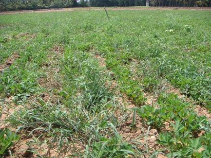
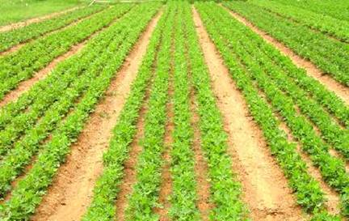

groundnut Irrigation
- Irrigation:
The kharif crop is caught in a long spell of drought, especially at the pod-formation stage, supplemental irrigation is given. For the irrigated groundnut, the frequency of irrigation depends on the soil texture, and the interval between irrigation ranges from 8-12 days. The peg-formation stage is critical.
- Weed Control:
  Unweed groundnut Weed free groundnut Intercultural operations: For controlling weeds, and also to keep the soil in a friable condition, the crop should generally receive a hand-weeding and one or two hoeings, with bullock-drawn implements, the first about three weeks after sowing and the second and the third about a fortnight and a month later. No interculture would be done after the pegs have commenced going underground. Earthing up can be done in the case of bunch and semi-spreading types for facilitate the maximum penetration of the pegs into the soil. Weeds can also be controlled effectively with Lasso or Tok-E-25 weedicide at the rate of 5 litres in 500 litres of water per hectare as a pre-emergence soil spray within two days of sowing groundnut.